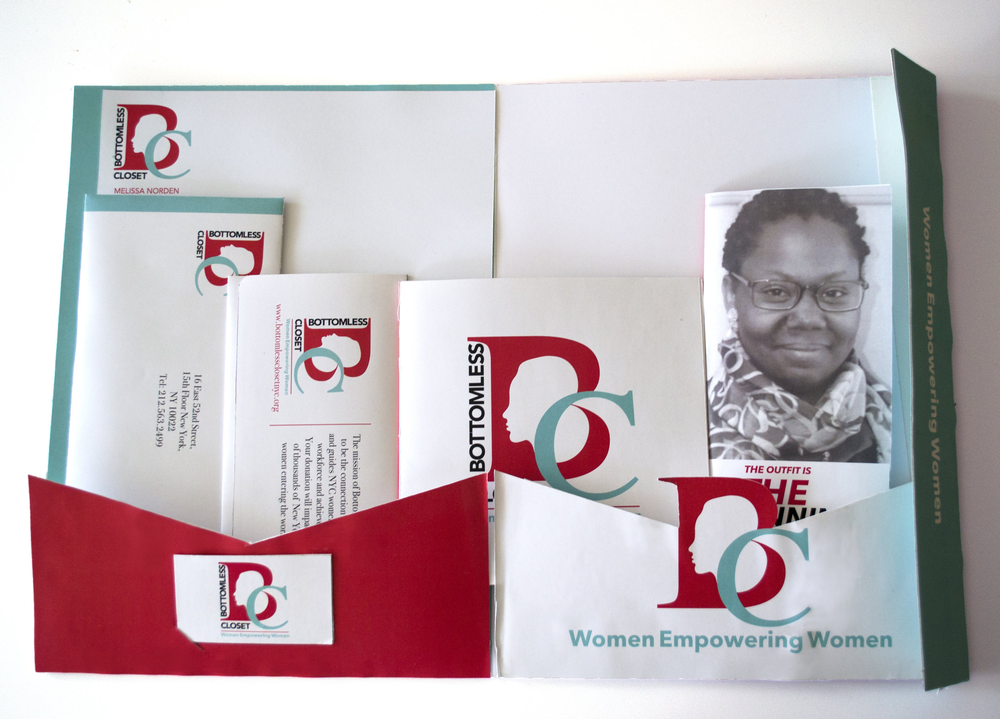

Branding for Bottomless Closet
I did re-branding for a non-profit organization, Bottomless Closet, based on 52nd Street. Visual language designed by creating logo and prototyping of business cards, letterheads, brochures, folders and more.
Bottomless Closet was established by a group of founding volunteers in response to an August, 1996 New York Times article that spoke about the obstacles that mothers on public assistance had seeking work, including the lack of appropriate interview clothing and the lack of self-confidence to present themselves professionally in an unfamiliar interview setting. The founders were also responding to the passage of “The Personal Responsibility and Work Opportunity Act” , also known as The Welfare Reform Act, the same year which radically transformed the nation’s welfare system by imposing a time limit on federal welfare benefits further complicating women’s transition from public assistance into the workforce. What is perhaps most remarkable about Bottomless Closet is that, from the beginning, it has relied on the support of a dedicated group of volunteers to accomplish the work and mission of the organization. Bottomless Closet believes that this is because the simplicity and strength of the concept of “women helping women” resonates so deeply. Bottomless Closet’s mission is to be the connection that inspires and guides disadvantaged New York City women to enter the workforce and achieve success.
For the branding of this project, I was inspired by the branding of another non-profit organization called Womenforwomen. The reason I really liked the branding was due to the simple use of three colors throughout the visuals, which is what I swore by while designing for Bottomless Closet.


Details about this project are further mentioned here:
- Was designed in Spring 2018
- The project was supervised by Jessica Weber
- The designing took place at Parsons The New School for Design
- For most of the project, Adobe Illustrator, printing and prototyping was done